Killer:
Criar pontos referência, ou seja, menos campos preenchidos, porém é importante criar mesmo que já tenha.
Croqui mapeavel.
Anotação interna e externa entre quadros como por exemplo:
| 1,3,5 |
1,4,5 |
1,5,8 |
| 2,7,8 |
2,5,8 |
3,58 |
| 1,5,9 |
2,5,8 |
3,58 |
1,2,3,5,7
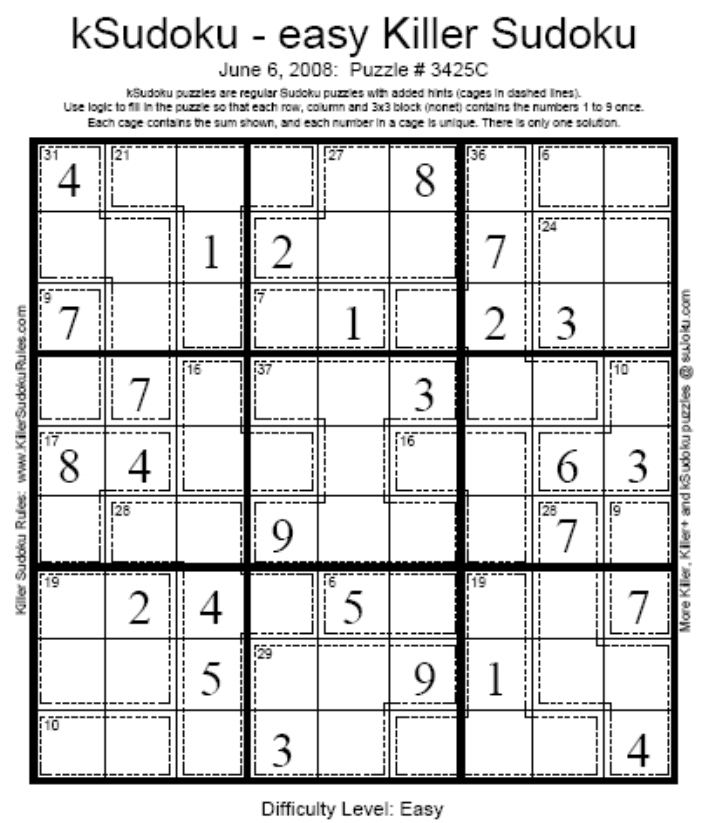
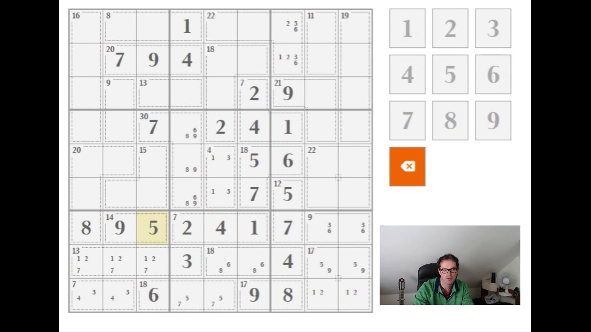
Verificação de linhas, colunas, diagonais, retângulo exclusivo(são números iguais sem um grupo específico de quadrantes podendo ser de diferentes regiões), cruzamentos...,porém nesse mesmo essa técnica não vai sempre funcionar
Ponto referência imaginário, podendo considerar matrizes ou vetores diferentes, com referência na diferença entre a soma, multiplicação, divisão e subtração.
Técnicas para um Sudoku matador
Único Oculto Complexo
No Killer Sudoku, se uma determinada gaiola deve conter um valor específico e apenas uma célula nessa gaiola pode conter esse valor, então essa célula deve conter o valor. Neste exemplo, a célula em azul deve conter o valor 1, pois uma gaiola 8/3 deve conter o valor 1 e esta é a única célula onde ele pode estar presente.
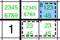
Interseções complexas, também conhecidas como interações de bloco linha-coluna, candidato bloqueado, apontando...
Para o Killer Sudoku, este solucionador também detectará interseções de gaiolas e casas: linhas, colunas, nonetos, diagonais... Se uma gaiola precisar conter um determinado valor e todas as células dessa gaiola onde esse valor pode estar estiverem bloqueadas dentro de uma casa, então nenhuma outra célula da casa poderá conter esse valor. Neste exemplo, uma das células em azul deve conter um 9, já que uma gaiola 22/3 deve incluir um 9, que não pode estar na célula inferior. Portanto, o 9 está bloqueado na célula azul e em nenhum outro lugar na linha e no noneto das células azuis.
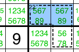
E vice-versa: se um valor para uma determinada casa estiver bloqueado em uma gaiola que não pode conter valores repetidos, então as células dessa gaiola que estão fora da casa não podem ter esse valor.
Neste exemplo, o 8 de C3 está bloqueado em R56C3, que estão todos na gaiola 30/4. Como a gaiola não pode conter valores repetidos, nenhuma outra célula da gaiola pode ter um 8. Consequentemente, R6C4 é forçado a ter 7.
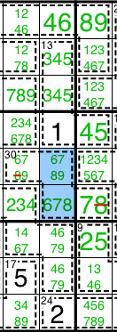
Nota: Também podemos inferir que a gaiola deve incluir esse valor, o que pode restringir suas possíveis combinações (não é o caso neste exemplo). O solucionador de Interseções não detectará essas combinações restritas, mas as Inclusões Obrigatórias as encontrarão.
Combinações únicas de pares, trios...
Este solucionador simples busca por gaiolas com combinações únicas, seja resolvendo a gaiola ou formando um subconjunto vazio. Ele entra em ação logo no início, pois um humano normalmente as identifica primeiro.
Pares Ímpares, Trios... Combinações, também conhecidas como Possibilidades Órfãs
Ao resolver uma grade, possibilidades serão removidas das células, o que pode resultar em gaiolas contendo combinações ímpares ou possibilidades órfãs. Este solucionador irá detectar e remover essas possibilidades.
Neste exemplo, quando R1C3 foi definido como 1, apenas o 1 foi removido da gaiola 5/2, restando o 4. Mas a gaiola 5/2 em R1C12 não pode conter um 4, pois não pode conter um 1, portanto, deve ser {23}.
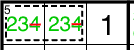
Neste segundo exemplo, a gaiola 3/2 forma um par nu em {12}, então essas possibilidades foram removidas da célula superior da gaiola 5/2, deixando {34} sem afetar a célula inferior da gaiola 5/2. Mas a célula inferior só pode ser {12}, já que a célula superior é {34}.
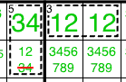
O solucionador buscará gaiolas em ordem crescente de complexidade, desde as gaiolas com o menor número de células não resolvidas e o menor número de possibilidades até as gaiolas com mais células e possibilidades. A busca será interrompida na primeira combinação ímpar encontrada. Todas as gaiolas serão verificadas, sejam visíveis ou não: gaiolas simples, que não podem ter números duplicados, gaiolas complexas resultantes de innie-outies, onde duplicatas podem ocorrer, e até mesmo as gaiolas mais complexas com diferenças ou contagens múltiplas de células.
Subconjunto Nu
No Killer Sudoku, o solucionador padrão também detectará subconjuntos nus dentro de uma gaiola que não pode conter valores repetidos. Neste exemplo, as duas células em azul formam um par nu em {89} dentro da gaiola 30/4. Como a gaiola não pode conter valores repetidos, nenhuma outra célula na gaiola pode conter {89}. R6C4 (com 6) também não poderia conter {89}.
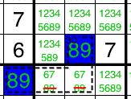
No Killer Sudoku, o solucionador padrão remove as possibilidades "nuas" de todas as células que são "amigas" em comum com cada célula que forma o subconjunto nu. Isso também pode incluir algumas células que não estão na mesma casa que as células nuas, mas que são amigas de todas elas. Neste exemplo do Killer #7 de Nate Dorward, as quatro células em azul R45C7+R6C89 formam um quarteto nu em {6789} dentro de N6. Como R6C6 é amiga de todas as quatro células (seja na mesma linha ou na mesma gaiola), então ela pode não ter {6789}.
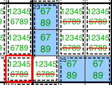
Nota: O solucionador de Subconjunto Nu padrão removerá as possibilidades de "nu" de todos os pares comuns de uma só vez.
O subconjunto nu generalizado encontrará o caso correspondente do Killer #7 por ND. Aqui está um exemplo de um quad nu generalizado. As quatro células em azul R4C7+R6C689 formam um quad nu em {6789}, já que cada uma delas é par das outras 3 (seja na mesma linha, no mesmo noneto ou na mesma gaiola). As duas células em R56C7 são par das quatro células que formam o quad nu (seja no mesmo noneto ou na mesma gaiola). Portanto, elas podem não ter {6789}.
 Subconjunto oculto
Subconjunto oculto
No Killer Sudoku, o solucionador padrão também detectará subconjuntos ocultos dentro de uma gaiola. A lógica é mais complexa do que para subconjuntos comuns, pois apenas as inclusões obrigatórias devem ser consideradas. Neste exemplo, a gaiola 12/4 pode ser {1236|1245} = {12(36|45)}. Seja qual for o caso, ela deve incluir {12}. Como {12} não pode estar na linha inferior da gaiola 12/4, existem apenas duas células onde {12} pode estar. Duas células para dois valores obrigatórios, formando assim um par oculto. Portanto, as duas células na linha superior da gaiola 12/4 devem ser {12} e não podem ter nenhum outro valor.
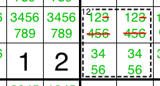
Inclusões obrigatórias, também conhecidas como gaiolas forçadas.
Este solucionador busca interseções de gaiolas e casas: linha, coluna, noneto, diagonal... Como resultado, uma gaiola pode ser forçada a incluir algum valor, o que pode restringir suas combinações possíveis.
Neste exemplo, o 1 para N2 está bloqueado na gaiola 15/3; portanto, a gaiola deve incluir um 1, o que deixa apenas duas combinações possíveis: {159|168}.
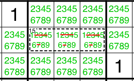
Técnicas avançadas para um Sudoku matador
Essas técnicas também são usadas para outras variantes com restrições sobre combinações: (não)consecutivas, sabedoria quadrada, proporção, bossdoku, renban...
Subconjunto Nu Complexo
O subconjunto nu regular pode ser estendido ao Sudoku Killer, onde podemos considerar as gaiolas como "entidades", assim como as células. Essas entidades formam Conjuntos Quase Bloqueados (ALS) dependendo de suas combinações.
Neste primeiro exemplo, a gaiola 5/2 pode ser {14} ou {23}. Em qualquer caso, ela deve incluir um 1 ou um 2. Isso forma um par nu complexo com a célula à sua esquerda: ou a célula é 1 e a gaiola é {23}, ou a célula é 2 e a gaiola é {14}. Em qualquer caso, tanto 1 quanto 2 estão bloqueados nessas 3 células. Portanto, nenhuma outra célula da linha ou do noneto pode ter {12}.
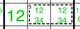
Neste segundo exemplo, duas gaiolas formam um par nu complexo em R1. Gaiola 15/3 em R1C123 e gaiola 11/2 em R1C45.
 Usar combinações de exibição também pode ajudar a identificar pares complexos de símbolos nus. Aqui estão as informações das duas gaiolas:
Gaiola 15/3 em R1C1 = {168|249|267|348}
Deve ter pelo menos um dos seguintes: {28|46}
Não pode ter {5}
Não pode ter ambos: {12|13|14|17|19|23|28|36|37|39|46|47|69|78|79|89}
Gaiola 11/2 em R1C4 = {29|38}
Deve ter pelo menos um dos seguintes: {23|28|39|89}
Não pode ter {14567}
Não pode ter ambos: {23|28|39|89}
Isso revela que a Gaiola 15/3 em R1C1 deve ter pelo menos um dos seguintes: {28}, assim como a Gaiola 11/2 em R1C4. Portanto, nenhuma outra célula de R1 pode ter {28}.
Dica: para gaiolas com 2 células e 2 combinações possíveis, você pode facilmente ver as combinações possíveis e os pares "deve ter pelo menos um deles" examinando suas marcas de lápis. Por exemplo, as células na gaiola 11/2 têm 4 possibilidades {2389} exibidas em um quadrado. As combinações possíveis estão em diagonais opostas, conectadas como um X: {29} ou {38}. Os pares "deve ter pelo menos um deles" estão nas laterais do quadrado formado pelas marcas de lápis: {23} ou {28} ou {39} ou {89}.
Aqui está um exemplo de um tripleto nu complexo. Três "entidades" formam um tripleto nu: duas células R9C12 e a gaiola 8/2 em R9C56. A gaiola 8/3 pode ser {17} ou {26} ou {35}, portanto deve incluir 1, 2 ou 3, assim como as duas células em R9C12. Portanto, nenhuma outra célula de R9 pode ter {123}.
Usar combinações de exibição também pode ajudar a identificar pares complexos de símbolos nus. Aqui estão as informações das duas gaiolas:
Gaiola 15/3 em R1C1 = {168|249|267|348}
Deve ter pelo menos um dos seguintes: {28|46}
Não pode ter {5}
Não pode ter ambos: {12|13|14|17|19|23|28|36|37|39|46|47|69|78|79|89}
Gaiola 11/2 em R1C4 = {29|38}
Deve ter pelo menos um dos seguintes: {23|28|39|89}
Não pode ter {14567}
Não pode ter ambos: {23|28|39|89}
Isso revela que a Gaiola 15/3 em R1C1 deve ter pelo menos um dos seguintes: {28}, assim como a Gaiola 11/2 em R1C4. Portanto, nenhuma outra célula de R1 pode ter {28}.
Dica: para gaiolas com 2 células e 2 combinações possíveis, você pode facilmente ver as combinações possíveis e os pares "deve ter pelo menos um deles" examinando suas marcas de lápis. Por exemplo, as células na gaiola 11/2 têm 4 possibilidades {2389} exibidas em um quadrado. As combinações possíveis estão em diagonais opostas, conectadas como um X: {29} ou {38}. Os pares "deve ter pelo menos um deles" estão nas laterais do quadrado formado pelas marcas de lápis: {23} ou {28} ou {39} ou {89}.
Aqui está um exemplo de um tripleto nu complexo. Três "entidades" formam um tripleto nu: duas células R9C12 e a gaiola 8/2 em R9C56. A gaiola 8/3 pode ser {17} ou {26} ou {35}, portanto deve incluir 1, 2 ou 3, assim como as duas células em R9C12. Portanto, nenhuma outra célula de R9 pode ter {123}.
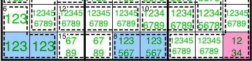
Outros ALS podem ser usados para formar subconjuntos nus complexos. Por exemplo, uma 'entidade' pode ser substituída por um UR tipo 3.
Nota: Este solucionador atualmente implementa apenas o caso de pares e trios nus complexos. Ele não encontrará quádruplos, quintetos nus complexos...
Subconjunto Oculto Complexo
O subconjunto oculto regular pode ser estendido ao Sudoku Killer, onde podemos considerar as gaiolas como 'entidades', assim como as células. Neste exemplo, as possibilidades {79} de R9 estão bloqueadas em R9C124. Existem apenas duas 'entidades' em R9 que podem conter {79}: a gaiola 12/2 em R9C12 e a célula em R9C4. Como nenhuma dessas entidades pode incluir ambas as {79}, cada uma delas deve incluir uma das {79}. Portanto, R9C4 é limitado a {79}.
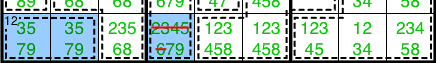
Combinações conflitantes
Este solucionador detectará gaiolas com combinações conflitantes, ou seja, combinações que cancelariam todas as possibilidades de outra célula ou de alguma outra gaiola.
Neste primeiro exemplo, a gaiola 14/2 não pode ser {68}, pois cancelaria todas as possibilidades da célula à esquerda. Portanto, a gaiola 14/2 deve ser {59}.
 Neste segundo exemplo, a gaiola 10/2 em R2C12 não pode ser {28} nem {46}, visto que a gaiola 15/3 em R1C123 deve ter pelo menos um dos valores {28} e também um dos valores {46}. Portanto, a gaiola 10/2 é {19} ou {37}.
Neste segundo exemplo, a gaiola 10/2 em R2C12 não pode ser {28} nem {46}, visto que a gaiola 15/3 em R1C123 deve ter pelo menos um dos valores {28} e também um dos valores {46}. Portanto, a gaiola 10/2 é {19} ou {37}.
.png) A gaiola também pode entrar em conflito com outras ALS. Por exemplo, uma 'entidade' pode ser substituída por um tipo UR 3. Veja também meu artigo sobre técnicas de unicidade para Killer.
Nota: Este solucionador atualmente verifica apenas gaiolas que entram em conflito com uma célula com duas possibilidades ou com uma gaiola que possui um par de possibilidades alternativas obrigatório. Ele também verificará combinações que entram em conflito com uma célula com três possibilidades ou com outra gaiola que deve incluir pelo menos uma das três possibilidades. Ele não verificará conflitos com quatro ou mais possibilidades.
A gaiola também pode entrar em conflito com outras ALS. Por exemplo, uma 'entidade' pode ser substituída por um tipo UR 3. Veja também meu artigo sobre técnicas de unicidade para Killer.
Nota: Este solucionador atualmente verifica apenas gaiolas que entram em conflito com uma célula com duas possibilidades ou com uma gaiola que possui um par de possibilidades alternativas obrigatório. Ele também verificará combinações que entram em conflito com uma célula com três possibilidades ou com outra gaiola que deve incluir pelo menos uma das três possibilidades. Ele não verificará conflitos com quatro ou mais possibilidades.
Gaiolas trancadas, também conhecido como Complexo Y-Wing
Este solucionador procura por um candidato para uma casa presa em duas gaiolas e considera as combinações possíveis. Ele procura por outro candidato também preso em uma das duas gaiolas.
Neste exemplo, o 4 de R1 está preso em R1C1256, que estão dentro de duas gaiolas 12/2 -> uma das gaiolas deve ser {48} -> o 8 de R1 também está preso em uma dessas gaiolas.
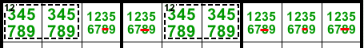
Neste exemplo, o 1 de R1 está bloqueado em R1C12456, seja na gaiola 8/2={17} ou na gaiola 17/3={179} -> 7 de R1 também está bloqueado em uma dessas gaiolas.
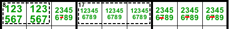
Neste exemplo, o 4 de R1 está bloqueado em R1C124, que estão dentro de duas gaiolas 12/2 -> ou gaiola 12/2 em R1C12 = {48} ou gaiola 12/2 em R12C4 = [48] -> 8 bloqueado em R1C12 ou R2C4 -> R1C456 e R2C123 <> 8. Isso é semelhante à Y-Wing.
 Cadeia XY complexa e laço
Cadeia XY complexa e laço